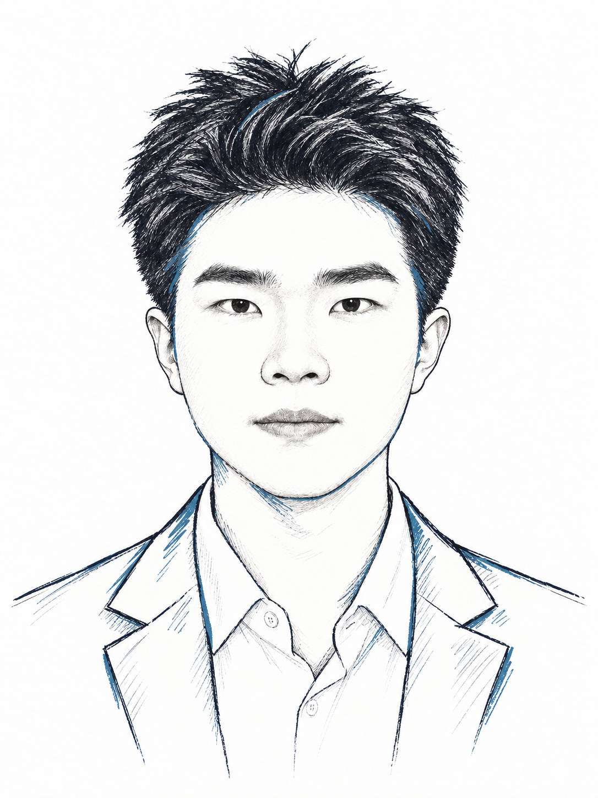

Central University of Finance and Economics
School of Information
Undergraduate · Computer Science and Technology · Minor in Finance
2023 — 2027
Expected graduation June 2027

徐守正
筑天阙于旷野
Raise a Celestial Palace in the Wilderness
I am a fourth-year undergraduate at the Central University of Finance and Economics, where I major in Computer Science and Technology and minor in Finance, under the supervision of Yue Wang.
I will be joining the School of Computer Science at Shanghai Jiao Tong University as a Ph.D. student under the supervision of Xiaobao Wu.
My research interests center on LLM and agent systems. More broadly, I am interested in AI-related topics in general. If you are interested in potential collaborations or would like to discuss anything, please feel free to reach out via email. Here is my CV.
School of Information
Undergraduate · Computer Science and Technology · Minor in Finance
2023 — 2027
Expected graduation June 2027
School of Computer Science
Incoming Ph.D. student · Computer Science and Technology
2027 — Incoming
Starting September 2027
WSDM 2027 · Full Paper (Main Track) · Accepted
Zonglin Feng*, Shouzheng Xu*, Qicheng Zhao, et al.
CIKM 2026 · Full Paper (Main Track) · Accepted
Shouzheng Xu*, Zonglin Feng*, Yunqi Zhou, Yaqing Li, Jingyi Wu
Paper PDF ↗WISE 2026 · Special Track · Accepted
Zonglin Feng*, Shouzheng Xu*, Qicheng Zhao
Paper PDF ↗2025
Developed under the supervision of Xu Yang, a researcher at Microsoft Research Asia.
A RAG system over 100,000+ domain documents, combining BM25, FAISS, and Neo4j retrieval with a multi-agent framework for complex policy questions.
Released at the second National Digital Economy Academic Conference and featured in Guangming Daily.
ICPC Asia Regional Contest · Bronze Medal
2025
“Bangyang Zhongcai” Recognition · Team Member
2025
President · Sep 2025 – Aug 2026
Founded CUFE’s student technology club and served as its president, with faculty guidance from Yan Wang and Yimin He. We organized programming activities and competitions and contributed to mini programs for anti-fraud and township information services, as well as other campus information projects.
Contact
xu.shouzheng@email.cufe.edu.cn ↗